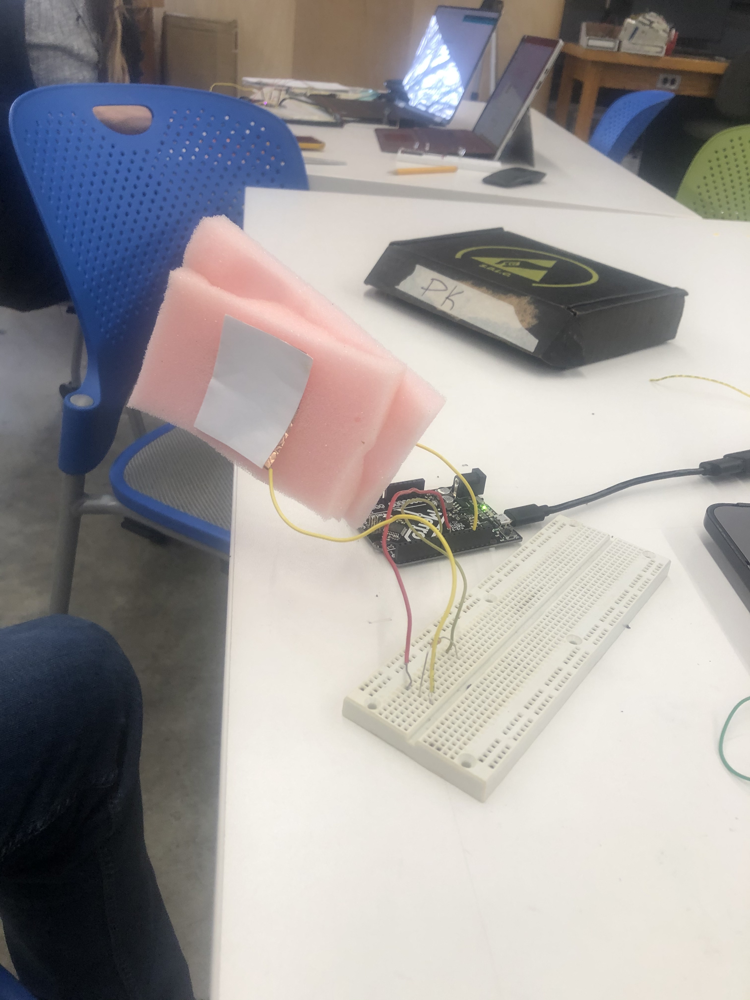

This week we learned a lot about sensors of various types, and got to learn the mechanisms and functionalities behind each. Additionally, we got to program with Arduino to connect with these sensors and process information in an easy utility based model rather than purchasing the sensor itself. In class we took a look at potentiometers, magnetic field readers, temperature/light/sound sensors. We also touched up on the physics/electrical systems behind the sensors themselves whether that be capacitance, parallel/series circuitry, voltage dividers, etc.
I decided to make my project this week based on a concept we discussed in class of building one's own sensor from simpler tools: I made a force sensor using two pieces of copper tape, foam, a 1 mOhm resistor, and an Arduino (As seen above). The logic of how the above sensor functions is simple, in that the pieces of copper tape act as two capacitor plates and have different amounts of stored charge based on distance between the two plates (as well as dielectric constant which we have here to be constant). The sensor functions pretty simply, in that it senses when the plates are being pushed/pulled, thus changing the distance between them. Using this, we are able to find a scaler quantity that we can relate to force using Work as a mediator between charge and force. I will be calibrating this sensor by means of using standard weights of which we know the force of gravity on them already (9.8*mass) and scaling to equalize these values.
For some reason, giphy and embedding a video are both not working so here is a picture of my sensor and graph and a link to the entire video on Google Drive.